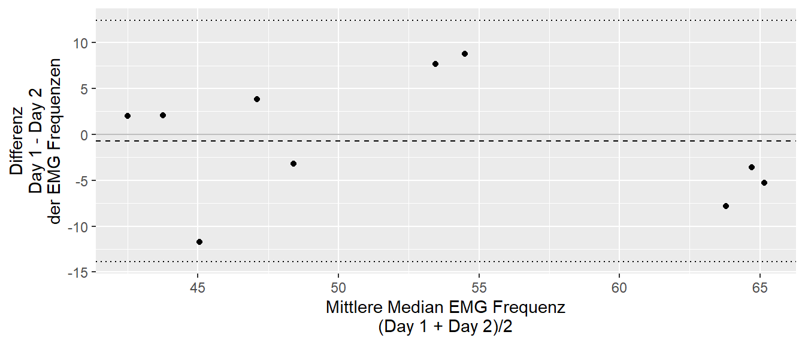
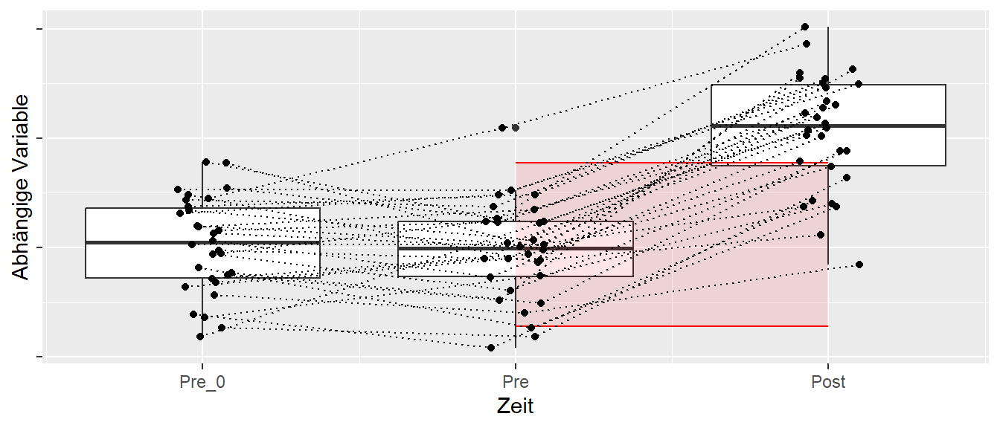

24 Reliabilität
Diese Kapitel beschäftigt sich mit der Güte von Messinstrumenten. Trotzdem eigentlich ein zentrales Thema bei der Erhebung von Messdaten wird es in den meisten Fällen gar nicht betrachtet.
24.1 Genauigkeit versus Präzision
Die ersten beiden wichtigen Eigenschaften eines Messinstruments sind die Genauigkeit und die Präzision. Beide sind Eigenschaften sind zentrale zur Beurteilung der Qualität eines Messinstruments. Genauigkeit beschreibt, wie nahe eine Messung am tatsächlichen oder wahren Wert liegt. Ein Messinstrument mit hoher Genauigkeit liefert Werte, die nur eine geringe Abweichung vom realen Wert aufweisen. Präzision hingegen bezieht sich auf die Wiederholbarkeit von Messungen: Ein präzises Instrument liefert bei mehrfacher Messung ähnliche oder identische Werte, unabhängig davon, ob diese dem wahren Wert nahekommen. Ein Messinstrument kann also präzise, aber ungenau sein, wenn die Werte zwar eng beieinanderliegen, jedoch systematisch vom tatsächlichen Wert abweichen. Idealerweise sollte ein Messinstrument sowohl genau als auch präzise sein, um verlässliche Ergebnisse zu liefern.
In Abbildung 24.1 sind Präzision und Genauigkeit anhang einer Zielscheibe noch einmal verdeutlicht.
Bevor eine Messung durchgeführt werden soll, ist es daher notwendig über die Genauigkeit und die Präzision eines Messgeräts Bescheid zu wissen. In manchen Fällen kann beispielsweise eine geringere Genauigkeit eines Messgeräts weniger problematisch sein als eine geringere Präzision. Wenn zum Beispiel nur Unterschiede gemessen werden sollen, dann ist in bestimmten Fällen die absolute Genauigkeit weniger von Bedeutung da die Abweichungen vom realen Wert durch den Vergleich subtrahiert werden. Wird zum Beispiel eine Waage verwendet um die Veränderungen im Gewicht an Untersuchungspersonen über die Zeit verglichen werden sollen. Die Waage sei aber nicht korrekt geeicht und zeigt immer \(2\) kg zu viel an. Dadurch ist der absolute, angezeigte Wert verfälscht. Werden aber die beobachteten Gewichte über die Messzeitpunkte voneinander abgezogen, dann ist der Unterschied zwischen den Messzeitpunkten dennoch korrekt. Die Annahme dabei ist allerdings, dass sich die Genauigkeit über den Beobachtungszeitung nicht verändert. Diese Eigenschaft kann mit Hilfe der Reliabilität untersucht werden.
24.2 Reliabilität
In Tabelle 24.1 sind ein Ausschnitt von EMG-Daten aus Liljequist, Elfving, und Skavberg Roaldsen (2019) abgetragen.
| Subject | Day 1 | Day 2 | Day 3 |
|---|---|---|---|
| 1 | 59.9 | 67.7 | 72.2 |
| 2 | 62.9 | 66.5 | 67.9 |
| 3 | 58.9 | 50.1 | 47.9 |
| 4 | 46.8 | 50.0 | 53.9 |
| 5 | 62.5 | 67.8 | 62.6 |
| 6 | 44.8 | 42.7 | 48.4 |
Insgesamt wurde bei \(N = 10\) Personen die Muskelaktivierung in der Rückenmuskulatur über drei Tagen jeweils an der gleichen Stelle gemessen. Ziel war ein Abzuschätzen zu erhalten, wie stabil bzw. ähnlich die EMG-Messungen über die verschiedenen Tage sind. In Abbildung 24.2 sind die Daten noch einmal graphisch dargestellt.

Wie in Abbildung 24.2 zu sehen ist, schwanken die Werte über die drei Messzeitpunkte. Einmal sind innerhalb der Personen Unterschiede zu erkennen, aber auch die Mittelwerte für die Messtage über die zehn Personen hinweg verändern sich über die Messzeitpunkte. D.h. die gewählte Messmethodik weist selbst Schwankungen auf. Die Höhe der Schwankungen müssen aber bei der Erstellung eines Untersuchungsdesigns berücksichtigt werden. Sollen beispielsweise Unterschiede zwischen zwei Gruppen mit Hilfe dieser Messmethodik untersucht werden, aber wenn sich die zu erwartenden Unterschiede zwischen den Gruppen in der Größenordnung der Schwankungen oder möglicherweise sogar darunter, dann wird es sehr schwierig bis unmöglich werden diese Unterschiede in einem Experiment nachweisen zu können. Diese ungewollten Schwankungen sind einer Funktion der Reliabilität der Messmethodik. Ohne eine Kenntnis der Reliabilität einer Methodik ist tatsächlich die Durchführung einer experimentellen Untersuchung immer ein Stück weit Kaffeesatzlesen.
24.2.1 Modell
Um sich der Reliabilität inhaltlich zu nähern ist zunächst die Erstellung eines theoretischen Modells erforderlich. Soll ein Wert bestimmt werden, der die Eigenschaft eines Objekts beschreibt, dann ist eine plausible Annahme das es einen wahren Wert gibt. Zum Beispiel ist direkt einsichtig, dass ein gegebener Holzstab eine bestimmte Länge hat. Oder eine Hantelscheibe hat ein bestimmtes Gewicht. Solange keine Manipulation an der Scheibe durchgeführt wird, sollte sich dieses Gewicht nicht ändern. Diesen Wert soll nun als true-score bezeichnet werden und er erhält das Zeichen \(\tau\). Während \(\tau\) für eine Hantelscheibe noch relativ direkt einsichtig ist, ist dies nicht mehr ganz so einfach sobald biologische Objekte ins Spiel kommen. Soll beispielsweise die Körpergröße einer Person bestimmt werden, dann ist klar das die Körpergröße keine feststehende Größe ist, sondern im Verlauf eines Tages einer Schwankung unterliegt (Tyrrell, Reilly, und Troup 1985). In Abbildung 24.3 ist beispielsweise die Veränderung der Körperhöhe im Verlauf eines Tages abgetragen.
Es soll nun aber davon ausgegangen werden das der wahre Wert \(\tau\) wohldefiniert ist. Dann besteht aber nach wie vor das Problem, selbst bei der Hantelscheibe, dass dieser Wert mit Hilfe eines Messmethodik bestimmt werden muss. Zum Beispiel im Fall der Hantelscheibe muss eine Waage verändert werden um das Gewicht zu bestimmen. Diese Waage ist aber selbst unweigerlich mit Messfehlern behaftet. Vielleicht ist bei der Eichung was schief gegangen, vielleicht ist die Feder mit Zeit ausgeleiert, oder die Umgebungstemperatur entspricht nicht den Vorgaben usw. und sofort. Das führt dazu, dass der gemessene Wert nicht gleich dem wahren Wert \(\tau\) entspricht. Um den gemessenen Wert vom wahren Wert zu unterscheiden wird ein weiteres Symbol \(Y\) verwendet. \(Y\) ist dementsprechend der beobachtete Wert. Die Messfehler werden weiterhin mit dem Symbol \(\epsilon\) bezeichnet. Dies führt insgesamt zu folgendem Modell:
\[\begin{equation} Y = \tau + \epsilon \label{eq-ed-reliability-model} \end{equation}\]
D.h. der beobachtete Wert \(Y\) setzt sich zusammen aus dem wahren Wert \(\tau\) und dem Messfehler \(\epsilon\). Der Messfehler geht additiv ein. Eine weitere Annahme soll nun dahin gehend bestehen, dass die Messfehler zufällig sind und bei wiederholter Messung im Mittel gleich \(0\) sind. Formal ist der Erwartungswert \(E[\epsilon_0] = 0\). Weiterhin besteht keine Zusammenhang zwischen der Größe des Messfehlers und der Größe von \(\tau\). Beispielsweise bei der Messung der Körpergröße verändert sich die Größe des Messfehlers nicht mit der Größer der Probandinnen sondern bleibt konstant. Formal führt dies zu \(\text{Cov}(\epsilon,\tau) = 0\).
Werden nun mehrere bzw. \(N\) Messungen durchgeführt, dann wird entsprechend nicht nur ein wiederholter, konstanter Wert beobachtet sondern eine Menge von Werten. Um diese zu unterscheiden wird entsprechend ein Index \(i\) eingeführt.
\[\begin{equation} Y_i = \tau_i + \epsilon_i, \quad i \in [1,\ldots,N] \end{equation}\]
Sobald nun mehrere Werte zur Verfügung stehen, kann für diese beobachteten Wert \(Y_i\) eine Varianz berechnet werden und, zumindest theoretisch, auch eine Varianz für die \(\tau_i\)s berechnet werden. Dies ermöglicht nun eine formale Definition der Reliabilität unter dem gegebenen Modell.
Definition 24.1 (Reliabilität - Definition) Die Reliabilität ist definiert als das Verhältnis der Varianz der True-Score-Variablen \(\sigma_{\tau}\) zur Gesamtvarianz der Testvariablen \(\sigma_{Y}\). (Moosbrugger und Kelava 2020, p.282)
\[\begin{equation} \text{Rel} = \frac{\sigma_{\tau}^2}{\sigma_{Y}^2} = \frac{\sigma_{\tau}^2}{\sigma_{\tau}^2+\sigma_{\epsilon}^2} \end{equation}\]
Der Wertebereich der Reliabilität liegt in \(\text{Rel} \in [0,1]\) wobei eine Wert \(0\) gar keine Reliabilität anzeigt, während ein Wert von \(\text{Rel} = 1\) auf eine perfekte Reliabilität hindeutet.
Veranschaulicht, wenn der Messfehler gleich Null ist, also \(\sigma_{\epsilon}^2 = 0\) gilt, dann ist \(\text{Rel} = 1\), während der Messfehler sehr groß im Verhältnis zu \(\sigma_{\tau}^2\), dann geht der \(\text{Rel}\) gegen Null. Für die Interpretation der Reliabilität hat sich in der Literatur eine Kategorisierung entlang der Werte in Tabelle 24.2 etabliert.
| Bereich | Interpretation |
|---|---|
| \(<0.5\) | poor |
| \(0.5-0.75\) | moderate |
| \(0.75-0.9\) | good |
| \(>0.9\) | excellent |
24.2.2 Terminologie
Baumgartner (1989, p.46)
24.2.3 Relative reliability (Consistency)
Degree to which people maintain their position (rank)
- internal consistency reliability: within day
- stability reliability: between days
- rater reliability (objectivity): between raters
24.2.4 Absolute reliability (Agreement)
Degree to which people’s score do not change in magnitude or value
24.3 Intraclass correlation coefficient
\[\begin{equation*} ICC = \frac{\text{variance of interest}}{\text{variance of interest} + \text{unwanted variance}} \end{equation*}\]
24.3.1 Datenmodell
| Subject | Judge 1 | Judge 2 | \(\cdots\) | Judge k | Mean |
|---|---|---|---|---|---|
| 1 | \(x_{11}\) | \(x_{12}\) | \(\cdots\) | \(x_{1k}\) | \(S_1\) |
| 2 | \(x_{21}\) | \(x_{22}\) | \(\cdots\) | \(x_{2k}\) | \(S_1\) |
| \(\vdots\) | \(\vdots\) | \(\vdots\) | \(\vdots\) | \(\vdots\) | |
| n | \(x_{n1}\) | \(x_{n2}\) | \(\cdots\) | \(x_{nk}\) | \(S_n\) |
| Mean | \(M_1\) | \(M_2\) | \(\cdots\) | \(M_k\) | \(\bar{x}\) |
24.3.2 Varianzkomponenten
Ansatz: Die Gesamtvarianz in verschiedene Komponenten aufspalten (ANOVA)
Modell: \[\begin{align*} x_{ij} &= \mu + r_i + c_j + e_{ij} \\ r_i &\sim \mathcal{N}(0,\sigma_r) \\ c_j &\sim \mathcal{N}(0,\sigma_c) \\ e_{ij} &\sim \mathcal{N}(0,\sigma_e) \end{align*}\]
24.3.3 Berechnung der Varianzkomponenten
Terminologie nach Liljequist, Elfving, und Skavberg Roaldsen (2019)
| SSQ | Bezeichnung | Berechnung | MSQ |
|---|---|---|---|
| SST | Total | \(\sum_{i=1}^n\sum_{j=1}^k (x_{ij} - \bar{x})^2\) | \(\frac{SST}{n\cdot k-1}\) |
| SSBS | Between Subject | \(\sum_{i=1}^n\sum_{j=1}^k (S_i - \bar{x})^2\) | \(\frac{SSBS}{n-1}\) |
| SSBM | Between Measurement | \(\sum_{i=1}^n\sum_{j=1}^k (M_j - \bar{x})^2\) | \(\frac{SSBM}{k-1}\) |
| SSWS | Within Subject | \(\sum_{i=1}^n\sum_{j=1}^k (x_{ij} - S_i)^2\) | \(\frac{SSWS}{n\cdot(k-1)}\) |
| SSWM | Within Measurements | \(\sum_{i=1}^n\sum_{j=1}^k (x_{ij} - M_j)^2\) | \(\frac{SST}{k\cdot (n-1)}\) |
\(SSE = SST - SSBS - SSBM\) Error \(MSE = \frac{SSE}{(n-1)\cdot (k-1)}\)
24.3.4 Intraclass Correlation - Modelle
| Bezeichnung | Modell | Expected Mean Squares |
|---|---|---|
| Model 1 | \(x_{ij} = \mu + \underbrace{r_i + e_{ij}}_{\text{zufällig}}\) | \(MSBM \approx \sigma_e^2\) |
| Model 2 | \(x_{ij} = \mu + \underbrace{r_i + \overbrace{c_j}^{bias} + e_{ij}}_{\text{zufällig}}\) | \(MSBM \approx n\cdot \sigma_c^2 + \sigma_e^2\) |
| Model 3 | \(x_{ij} = \mu + \underbrace{r_i}_{\text{zufällig}} + \overbrace{c_j}^{\text{fixed}} + \underbrace{e_{ij}}_{\text{zufällig}}\) | \(MSBM \approx n\cdot \theta_c^2 + \sigma_e^2\) |
24.3.5 Intraclass Correlation \(\rho_1\)
24.3.6 Model 1 ICC(1)
\[\begin{equation*} \rho_1 = \frac{\sigma_r^2}{\sigma_r^2+\sigma_e^2} \end{equation*}\]
\[\begin{equation*} ICC(1) = \frac{MSBS - MSWS}{MSBS + (k-1)MSWS} \end{equation*}\]
24.3.7 Intraclass Correlation \(\rho_2\) Modell 2
24.3.8 Model 2 ICC(A,1) Absolute
\[\begin{align*} \rho_{2A} &= \frac{\sigma_r^2}{\sigma_r^2+\sigma_c^2 + \sigma_e^2} \\ ICC(A,1) &= \frac{MSBS - MSE}{MSBS + (k-1)MSE + \frac{k}{n}(MSBM-MSE)} \end{align*}\]
24.3.9 Model 2 ICC(C,1) Consistency
\[\begin{align*} \rho_{2C} &= \frac{\sigma_r^2}{\sigma_r^2 + \sigma_e^2} \\ ICC(C,1) &= \frac{MSBS - MSE}{MSBS + (k-1)MSE} \end{align*}\]
24.3.10 Intraclass Correlation \(\rho_3\) Model 3
24.3.11 ICC(A,1) Absolute
\[\begin{align*} \rho_{3A} &= \frac{\sigma_r^2}{\sigma_r^2 + \theta_c^2 + \sigma_e^2} \\ ICC(A,1) &= \frac{MSBS - MSE}{MSBS + (k-1)MSE + \frac{k}{n}(MSBM-MSE)} \end{align*}\]
24.3.12 ICC(C,1) Consistency
\[\begin{align*} \rho_{3C} &= \frac{\sigma_r^2}{\sigma_r^2 + \sigma_e^2} \\ ICC(C,1) &= \frac{MSBS - MSE}{MSBS + (k-1)MSE} \end{align*}\]
24.3.13 Übersicht
24.3.14 Intraclass Correlation in R
icc_hat <- psych::ICC(lil[,-1])
icc_hatCall: psych::ICC(x = lil[, -1])
Intraclass correlation coefficients
type ICC F df1 df2 p lower bound upper bound
Single_raters_absolute ICC1 0.71 8.2 9 20 5e-05 0.39 0.91
Single_random_raters ICC2 0.71 8.7 9 18 6e-05 0.39 0.91
Single_fixed_raters ICC3 0.72 8.7 9 18 6e-05 0.40 0.91
Average_raters_absolute ICC1k 0.88 8.2 9 20 5e-05 0.65 0.97
Average_random_raters ICC2k 0.88 8.7 9 18 6e-05 0.66 0.97
Average_fixed_raters ICC3k 0.89 8.7 9 18 6e-05 0.66 0.97
Number of subjects = 10 Number of Judges = 3
See the help file for a discussion of the other 4 McGraw and Wong estimates,siehe Liljequist, Elfving, und Skavberg Roaldsen (2019), Qin u. a. (2019)
24.4 Spearman-Brown prophecy formula
\[ \rho_{xx'}^* = \frac{K \cdot \rho_{xx'}}{1 + (K-1) \cdot \rho_{xx'}} \]

24.5 Beispiel aus Guyatt, Walter, und Norman (1987)
| subject | instrument | time_1 | time_2 | treatment | time_3 |
|---|---|---|---|---|---|
| s_1 | A | 8 | 9 | trt | 15 |
| s_2 | A | 9 | 8 | trt | 15 |
| s_3 | A | 8 | 9 | trt | 15 |
| s_4 | A | 9 | 8 | trt | 15 |
| s_5 | A | 8 | 9 | con | 8 |
| s_6 | A | 9 | 8 | con | 9 |
| s_7 | A | 8 | 9 | con | 8 |
| s_8 | A | 9 | 8 | con | 9 |
| s_1 | B | 5 | 5 | trt | 5 |
| s_2 | B | 9 | 9 | trt | 9 |
| s_3 | B | 13 | 13 | trt | 13 |
| s_4 | B | 17 | 17 | trt | 17 |
| s_5 | B | 5 | 5 | con | 5 |
| s_6 | B | 9 | 9 | con | 9 |
| s_7 | B | 13 | 13 | con | 13 |
| s_8 | B | 17 | 17 | con | 17 |
24.6 Agreement versus Reliability Vet u. a. (2006)
24.6.1 Agreement
How close are repeated measurements?
24.6.2 Reliability
How good can patients be distinguished?

24.7 Standard Error of Measurement
\[\begin{align*} SEM &= \sqrt{\sigma_{error}} \\ SEM_1 &= s_y \sqrt{1 - ICC} \\ SEM_H &= \frac{s_{d_i}}{\sqrt{2}} \end{align*}\]1
24.8 Limits of Agreement
\(\text{loa} = \bar{d}\pm 1.96\ s_d\)

24.8.1 Konfidenzintervalle Limits of agreement
24.8.1.1 Konfidenzintervall bias
\[ CI95\%_{\text{bias}} = \bar{d} \pm 1.96\frac{s_d}{\sqrt{n}} \]
24.8.1.2 Konfidenzintervall loa
\[\begin{align*} \text{loa} &= \bar{d}\pm 1.96\ s_d \\ Var(\bar{d}\pm1.96\ s_d) &= \left(\frac{1}{n}+\frac{1.96^2}{2(n-1)}\right)s_d^2\approx1.71^2\frac{s_d^2}{n} \\ CI95\%_{\text{loa}} &= \text{loa}\pm q_{t,\alpha,df=n-1}\times 1.71\frac{s_d}{\sqrt{n}} \end{align*}\] 2